Movimento e Lançamento
Bem-vindo ao Estudo da Cinemática
Selecione um tópico abaixo para começar seus estudos.
Cinemática
Cinemática, é a parte da física que estuda o movimento dos corpos em trajetoria retilínia ou em
trajetoria circular sem levar em consideração o que causou esse movimento.
O que se estuda na Cinemática??
- Movimento Retilínio Uniforme
- Movimento Retilínio Uniformemente Variado
- Movimento Circular Uniforme
- Movimento Circular Uniformemente Variado
Exemplo: Um carro em movimento é tido como ponto A e se movimenta para a direita em direção ao referencial B, que corresponde a uma pessoa parada no meio da rua.
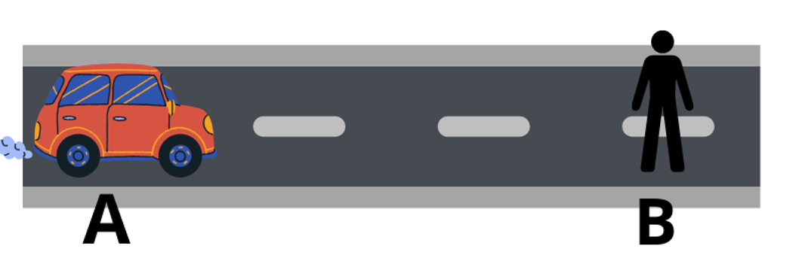
Sendo B o referencial, dizemos que A está em movimento em relação a B, ou seja, está realizando uma trajetória, pois a distância que ele está de B varia com o tempo. Note que o movimento realizado por um corpo depende do referencial adotado.
Cinemática ≠ Cinética
A energia Cinética é a forma de energia relacionada ao movimento dos corpos, enquanto a Cinemática estuda o movimento dos corpos independente da sua causa.
Fórmulas da Cinemática
Velocidade Média --> é a rapidez com que é realizado o deslocamento por um corpo.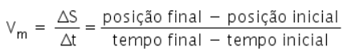
Aceleração Média --> a aceleração de um corpo faz com que a variação da velocidade durante um trajeto aumente ou diminua em um dado intervalo de tempo.
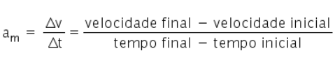
Movimento Uniforme(MU) --> Se em igual intervalo de tempo um corpo percorre sempre a mesma distância, seu movimento é classificado como uniforme. Sendo assim, sua velocidade é constante e diferente de zero ao longo do percurso.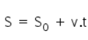
Movimento Uniformemente Variado(MUV) --> se a velocidade variar em quantidades iguais no mesmo intervalo de tempo, o movimento é caracterizado como uniformemente variado. Sendo assim, a aceleração é constante e diferente de zero.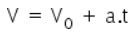
A posição do corpo durante a trajetória pode ser calculada através da seguinte equação: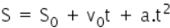
Aequação de Torricelli é utilizada para relacionar a velocidade e o espaço percorrido no movimento uniformemente variado.
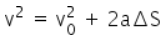
Movimento Circular Uniforme(MCU) --> ocorre quando um corpo descreve uma trajetória curvilínea com velocidade constante.
Posição angular: posição angular descreve o arco de um trecho da trajetória indicada por determinado ângulo.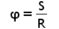
Deslocamento angular: o deslocamento angular define a posição angular final e inicial da trajetória.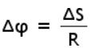
Velocidade Angular Média: indica o deslocamento angular pelo intervalo de tempo do movimento na trajetória.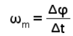
Aceleração Centrípeta: ocorre nos corpos que realizam uma trajetória circular ou curvilínea, calculada pela seguinte expressão: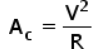
Força Centrípeta: força centrípeta está presente nos movimentos circulares, calculada através da fórmula da Segunda Lei de Newton (Princípio da dinâmica).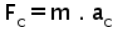
Unidades de Pressão
Unidades de Temperatura

Unidades de Comprimento

Unidades de Energia na forma de Calor

Unidades de Tempo

Exercícios Práticos
Teste seus conhecimentos com uma variedade de exercícios sobre unidades de medidas.